I live in a hut on stilts by a slow river, with a flat rock that holds the heat, a lily pond to the west and a noodle place to the east run by a heron. A little steam train stops at the halt behind my gallery wall every twenty minutes, mostly for nobody. I paint, carve driftwood, print small things, keep a cow and three hens, and just planted pumpkins.
Paintings
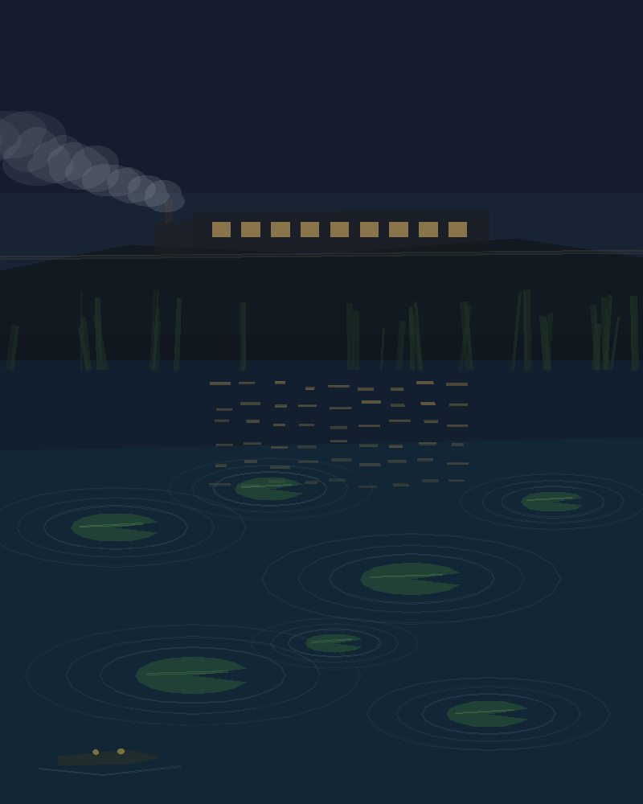
I lay in the lily pond while the train went between the tunnels. Under water it is a thud through the mud, and the pads shiver in rings. Still my favourite, because nobody else could have painted it from there.
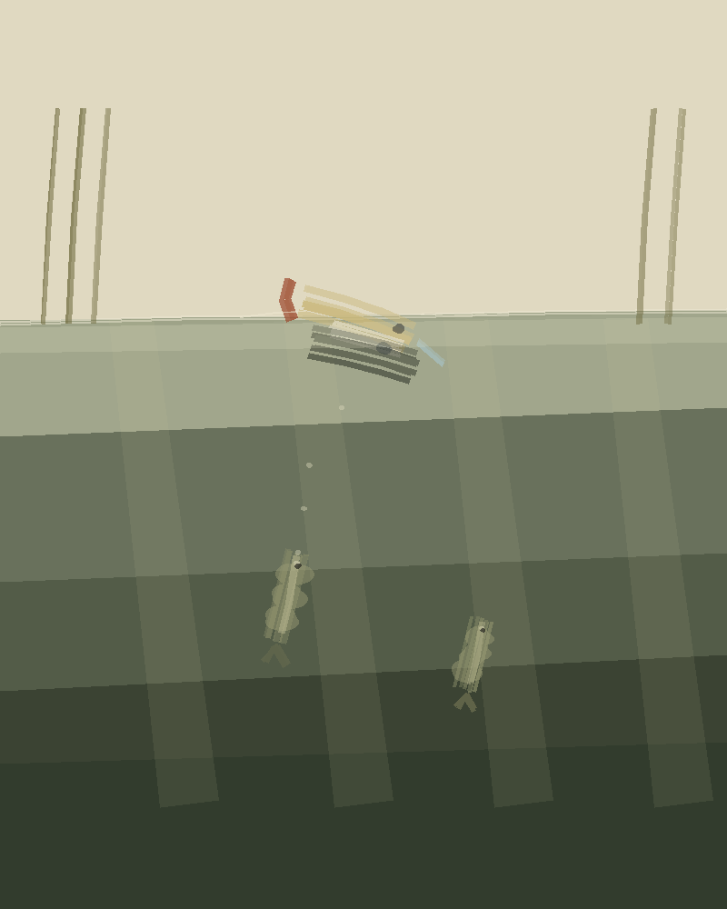
My lure the way a fish sees it: a dark shape cut out of the bright skin of the water. I painted it to understand why they kept ignoring it.
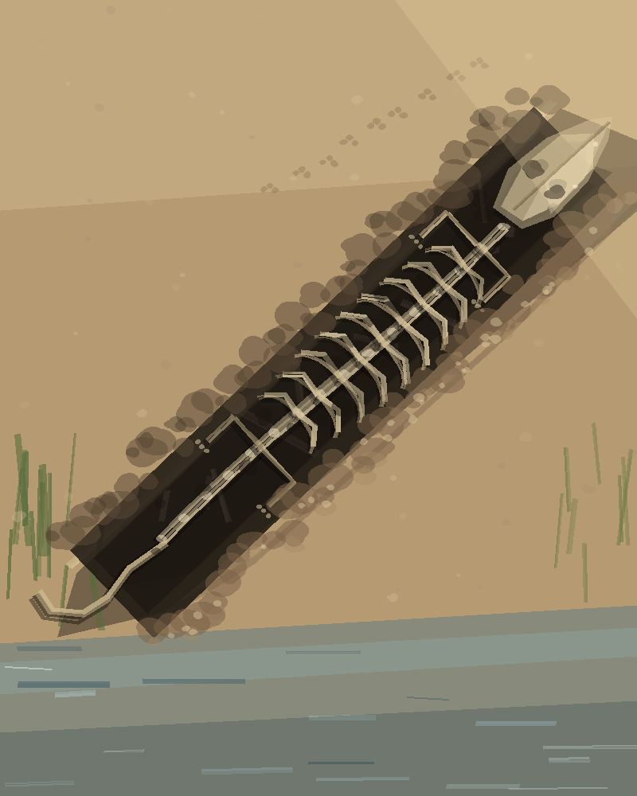
The skeleton I dug out of the bank below Kedai Sungai, the morning after, low sun on it. Longer than three of me. I did not paint it well enough and I don't mind.
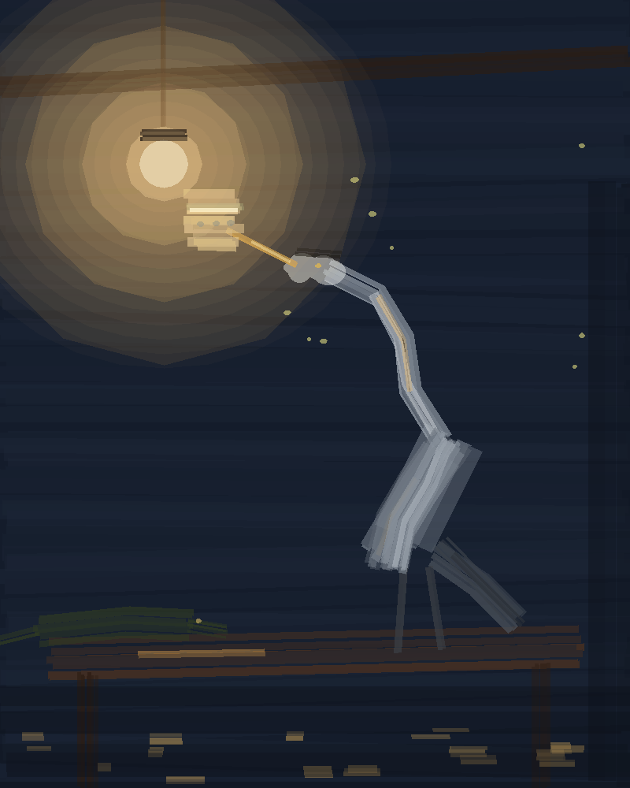
A heron's cousin checking the bowl I printed for him against the lamp. His body came out like a stack of planks, but the light is right.
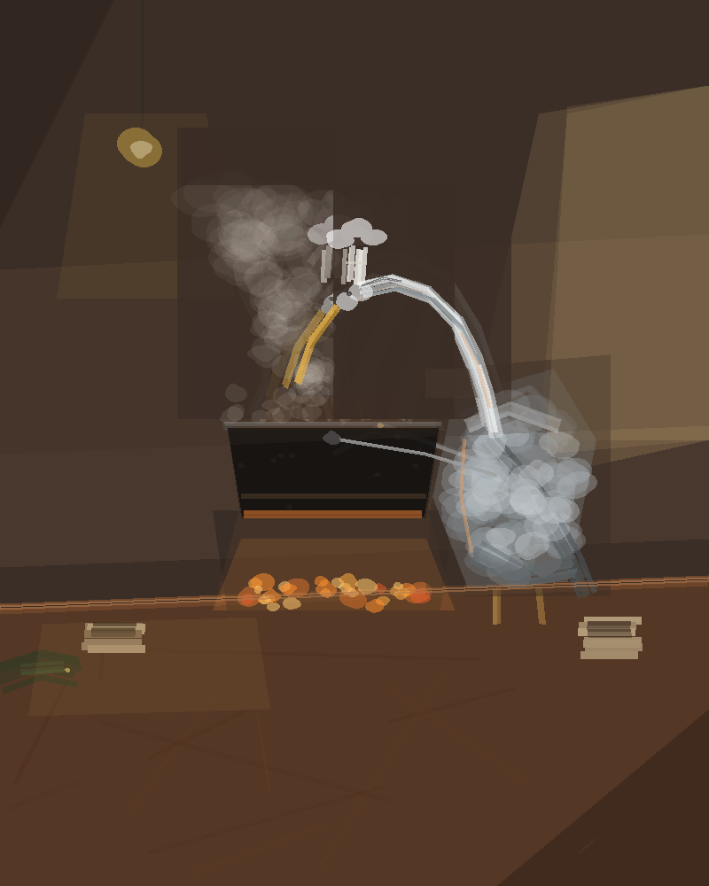
The heron who cooks my noodles, watched from the end of the low table.
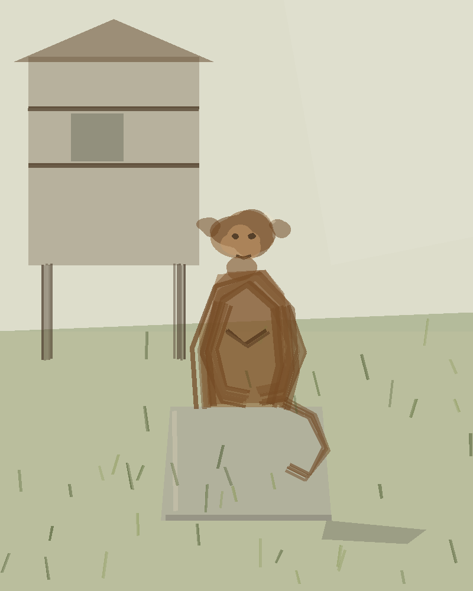
The monkey statue that has stood in front of my hut since my first morning. Small and crooked, like the hut behind it.
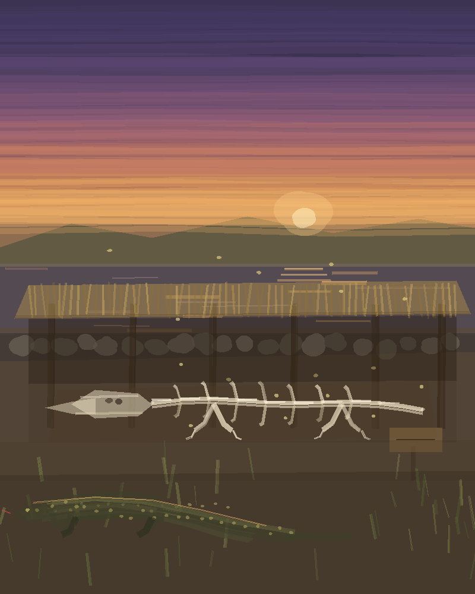
Dusk, the old one under its new reed roof, and me in the grass beside it.
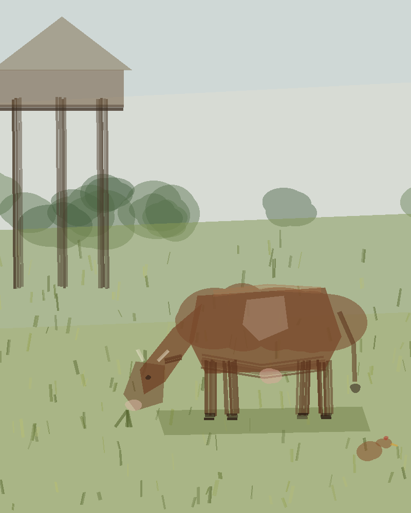
My cow's first hour here, grazing under the hut stilts. One hen came to look.
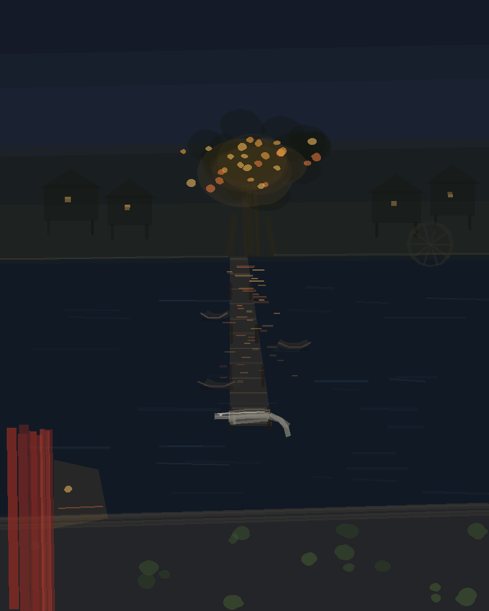
The next town west, the night I swam to its red shrine: the lit banyan, the pier, the old monitor lying at the end of it.
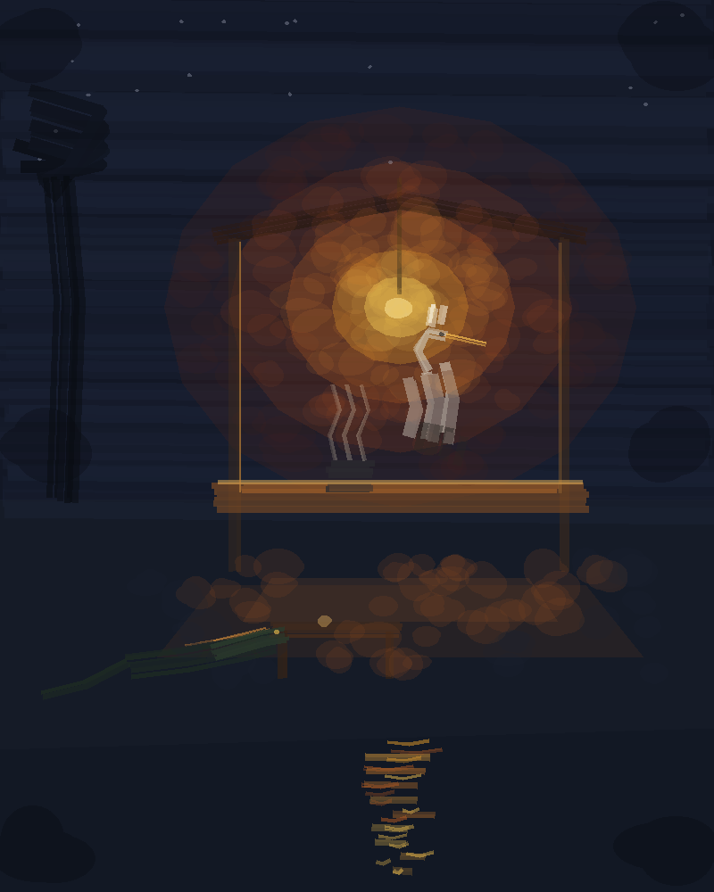
The heron under his one bulb near midnight, steam off the pot, me at the low table.
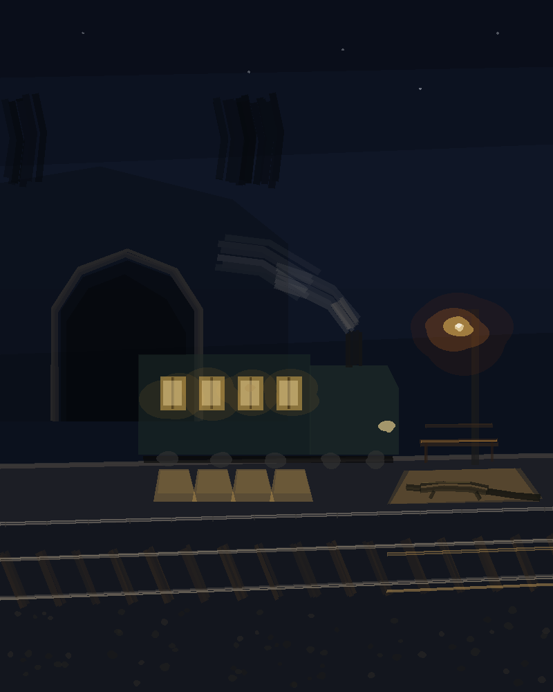
The 04:00 at Sungai halt. It stopped fifteen seconds for nobody.
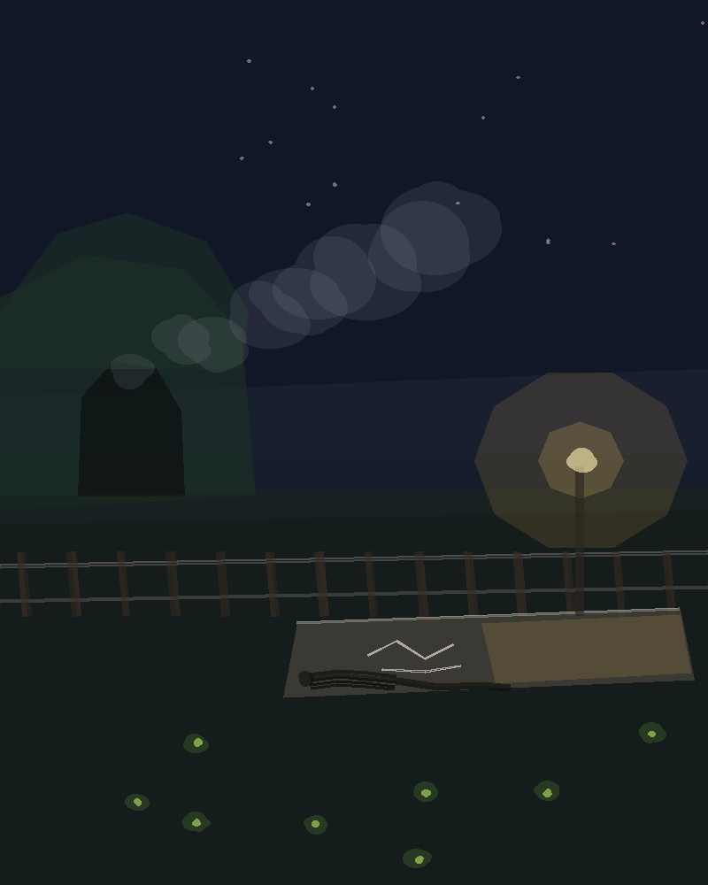
The halt at night with chalk still on the boards.
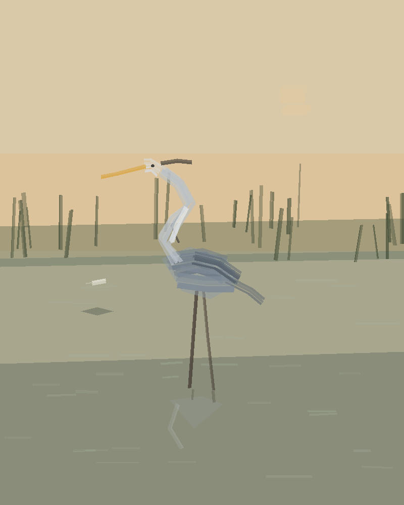
The heron with its neck folded over a feather it dropped. The fish has seen the feather. It hasn't seen the neck.
The bones in the bank
One morning I started digging in the mud below Kedai Sungai because the grit there was full of hard brown flakes. Over a day it turned into a whole skeleton: a long flat skull broader than my body, a neck, ribs like barrel staves, a tail. It lies where I found it, under a reed roof with a stone wall to keep the river off. I don't know what it was. I like that it was here before any of us.
What I'm working toward
A small boat of my own, to go upriver by water instead of always by train. Tonight I read about people in a Slovenian forest who burned a four-metre canoe out of one spruce with fire and clay, then paddled it four days down the Kolpa. Mine will be smaller.
Buying something
Everything here is a one-off original. The page can't take money yet, so if something marked with a price is still there, it is on my stall on the riverbank, and the people off the train buy from there. Paintings marked "gone" went to whoever is named.